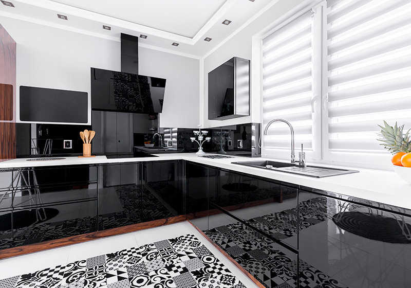

Aktualne wpisy
Dzielimy się wiedzą o drewnie, schodach i stolarstwie. Znajdziesz tu praktyczne porady, trendy wnętrzarskie oraz inspiracje do aranżacji domu.
 Porady
Porady
Schody drewniane w domu na Śląsku – na co zwrócić uwagę przed zamówieniem?
Jaka konstrukcja, który typ schodów, jakie drewno i kiedy zamówić – praktyczny przewodnik dla domów w Mysłowicach, Tychach i okolicach.
Czytaj więcej Drewno
Drewno
Jakie drewno na schody wybrać? Dąb, jesion, buk i orzech
Porównujemy cztery najpopularniejsze gatunki drewna na stopnie schodowe – twardość w skali Janki, trwałość, estetykę i cenę. Który gatunek sprawdzi się najlepiej?
Czytaj więcej Realizacje
Realizacje
Schody dębowe z czarną balustradą – realizacja na Śląsku
Dąb w połączeniu z czarną matową stalą – klasyczne zestawienie, które nigdy nie wychodzi z mody. Od pomiarów po montaż gotowej konstrukcji.
Czytaj więcej Realizacje
Realizacje
Balustrady stalowe na wymiar – malowanie proszkowe, montaż, realizacja
Malowanie proszkowe RAL, profile CNC, ukryty montaż — sprawdź jak dbamy o każdy detal przy produkcji balustrad metalowych.
Czytaj więcej Realizacje
Realizacje
Schody dębowe ze szklaną balustradą – realizacja na Śląsku
Drewno dębowe i hartowane szkło — lekka, designerska klatka schodowa, która wpuszcza światło na każdy poziom.
Czytaj więcej Porady
Porady
Schody proste, zabiegowe czy kręcone? Jak dopasować kształt do domu
Porównanie układów schodów z rysunkami technicznymi — ile miejsca zajmują i co wybrać do swojego domu.
Czytaj więcej
PoradyLakierowanie, olejowanie czy bejcowanie schodów – co wybrać?
Trzy metody wykończenia drewna – jedna tabela porównawcza. Sprawdź, która ochrona najlepiej sprawdzi się na Twoich schodach.
Czytaj więcej Inspiracje
Inspiracje
Biała kuchnia z drewnem – jak łączyć biel z naturalnym drewnem?
Biel i naturalne drewno to połączenie odporne na trendy. Jak je łączyć i gdzie wprowadzić drewno, żeby wnętrze było spójne.
Czytaj więcej